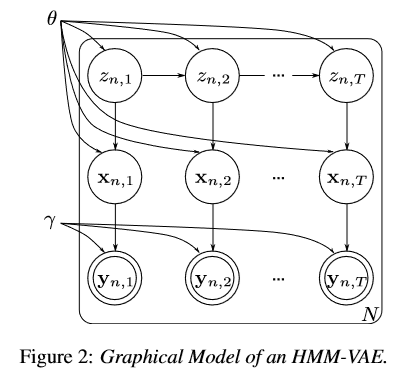

研究动机
多视角的 HMM 模型。在提出的几种可能的模型中，我最终选择了多视角 deep-HMM 作为我的研究方向。深度的部分我决定照着 HMM-VAE 的模型进行实现。
模型背景
HMM-VAE 可以用于非监督的时序数据的任务，比如 Acoustic and Lingustic Unit Discovery (声学、语言学的单元发现)。前者是自动语音识别的基本步骤，后者是自然语言处理的基本步骤。
以往用于 HMM 的发射概率的部分，都采用 GMM，但众所周知，现在神经网络的效果要优于 GMM，因此可以尝试用 VAE 来代替发射的部分。
此外，Structrure VAE (NIPS 2016) 指出了传统的概率模型具有可解释性，但是假设太 rigid；而深度学习的模型可以灵活训练，但可解释性差。因此大可以将这两者结合起来。
HMM-VAE 就是一种类型的 SVAE。
概率图模型

$\theta$ 控制了转移与发射概率；$\gamma$ 控制了编解码网络。